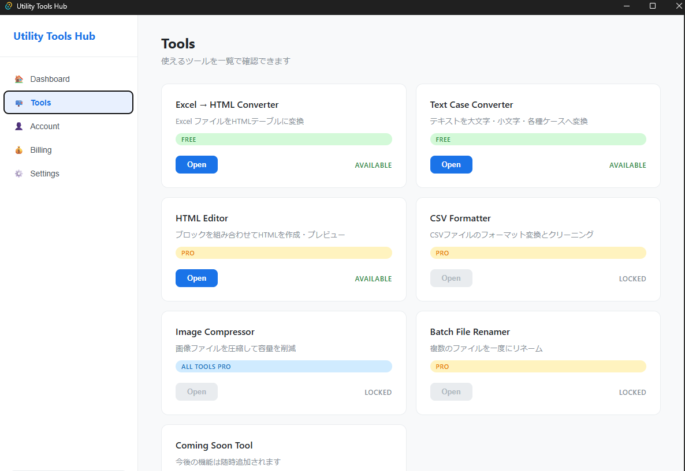
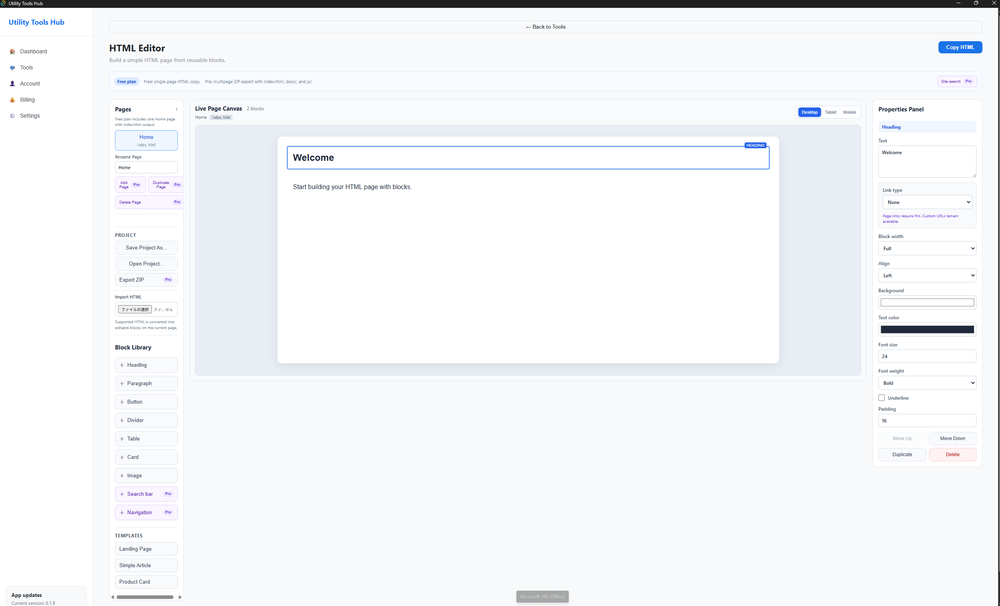
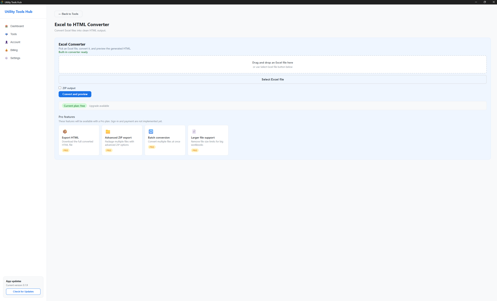

Excel HTML Converter
Excelの内容をHTMLへ変換し、結果をプレビューできます。
無料ファイル変換、テキスト整形、HTML編集。よく使う作業を、ひとつのWindowsアプリにまとめます。
最新版 v0.2.8 · 無料プレビュー公開中 · Pro機能は準備中

ひとつの作業に集中したツールを、共通の画面から利用できます。
Excelの内容をHTMLへ変換し、結果をプレビューできます。
無料大文字・小文字・タイトルケースなどへ、文字列を変換します。
無料ブロックを組み合わせ、HTMLページを編集・確認できます。
プレビューHTML Editorの作業内容をJSONファイルで保存し、あとから再開できます。
Windows標準の画面から、保存先や読み込むファイルを選べます。
新しい便利ツールや一括処理機能を、今後追加する予定です。
今後の予定を見る →ライブプレビューを見ながらブロックを配置し、既存HTMLの読み込みやプロジェクト保存ができます。

課金機能は未実装です。Proは購入できるプランではなく、今後の予定として掲載しています。
| 機能 | 無料プレビュー | Pro予定 |
|---|---|---|
| Excel HTML Converter | 利用可能 | 利用可能 |
| Text Case Converter | 利用可能 | 利用可能 |
| HTML Editor 単一ページ機能 | 利用可能 | 利用可能 |
| プロジェクトの保存・読込 | 利用可能 | 利用可能 |
| 複数ページのZIP出力 | — | 予定 |
| ローカルサイト検索 | — | 予定 |
ツール一覧から各機能の作業画面まで、現在のアプリを画像で確認できます。
利用できるツールと、無料・Pro予定の状態を一覧で確認できます。
ページを見ながら、ブロック選択とプロパティ編集を進められます。

Excelファイルの選択から変換・プレビューまで、ひとつの画面で操作できます。
Tools一覧とConverter Tools画面の分類を改善し、軽量コンバータ、テキスト変換、Excel変換、HTML編集の役割を分かりやすくしました。